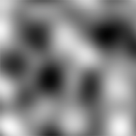
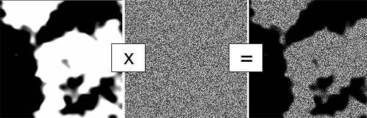
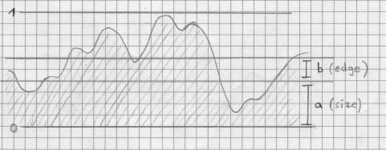

A sampler creates values between 0 and 1 for every position of a two-dimensional map. A sampler does also have a scale. It uses a seed if it based on a random algorithm. The values of a Sampler can be modified by a Modifier. The values of a Sampler can be interpreted by an Interpreter. A sampler is an sub element of a Layer.
Flat
This is the most basic of all Samplers. It returns one value for every position. The parameters seed and scale are not used for this Sampler.
Noise
Returns a value based on a noise algorithm. The following algorithms are implemented:Simplex Noise
 Read more about simplex noise on wikipedia.
MaskedSampler
The MaskSampler combines one Sampler as mask with another Sampler for the value. Using a Modifier on this Sampler modifies the value but not the mask. One or more MaskSampler are the root elements of a Layer.
Calculation of the value
mask(x, y) * sample(x, y)
Combined
A Combined Sampler combines one or more child Sampler. Thechildren are combined one after another, from the first to the last using operators.Operators
Plus
Minus
Mix
And
Or
Highest
Lowest
Child settings
Every child can be manipulated by overriding the scale and seed. This settings are not affecting the original Sampler but the child instance in this Combined Sampler. It is also possible to invert or multiply the value returned by this child instance.Hint
The Combined Sampler can also be used to manipulate a single existing Sampler. E.g to invert an existing Sampler to use it as an inverted mask.
The end result of the iterations are manipulated using the size and edge
parameters.

float currentScale = baseScale * (float) Math.pow(growth, iteration);